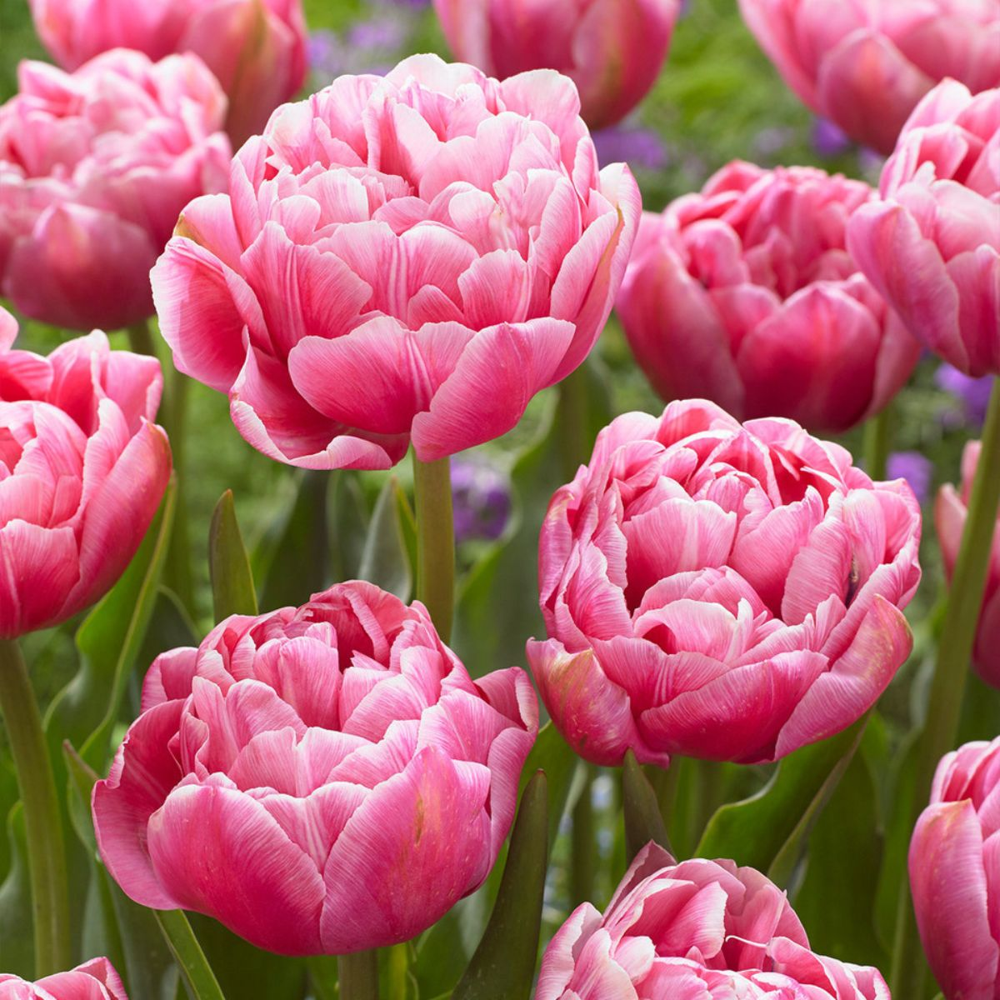

<button id="myButton" onclick="zamien()">zamień</button>
<script>
    function zamien(){
        let link=document.querySelector("img");
        link.setAttribute("src","kwiatek.jpg")
    }
</script>